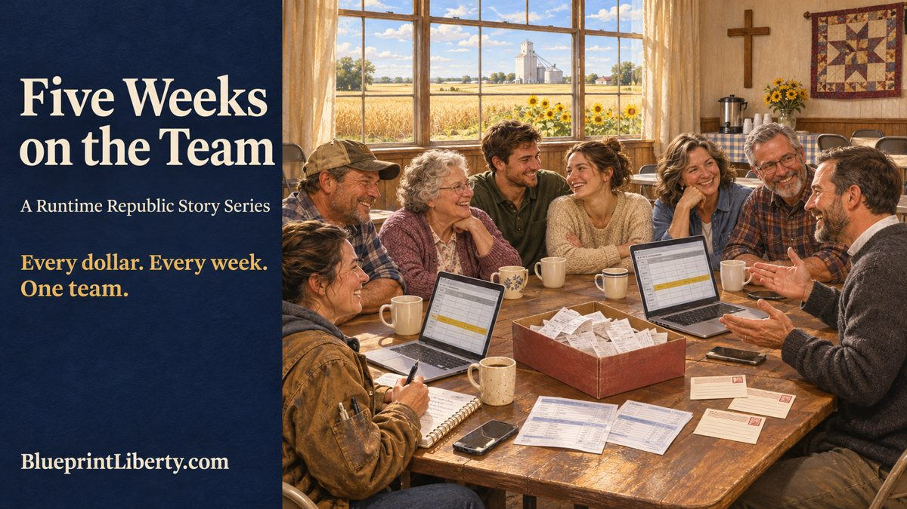

A Runtime Republic story series · 10 episodes · about 7 minutes each · Draft under review

Ordinary people join a Runtime Republic team and work their weekly budgets together: a forklift driver, a self-employed lawn man, a retired teacher, two young families and their pastor. Over ten episodes they trace every tax, write to the people who set them, face life events and hard nights, and learn to see every government that touches their lives. Each episode is written to be read aloud.